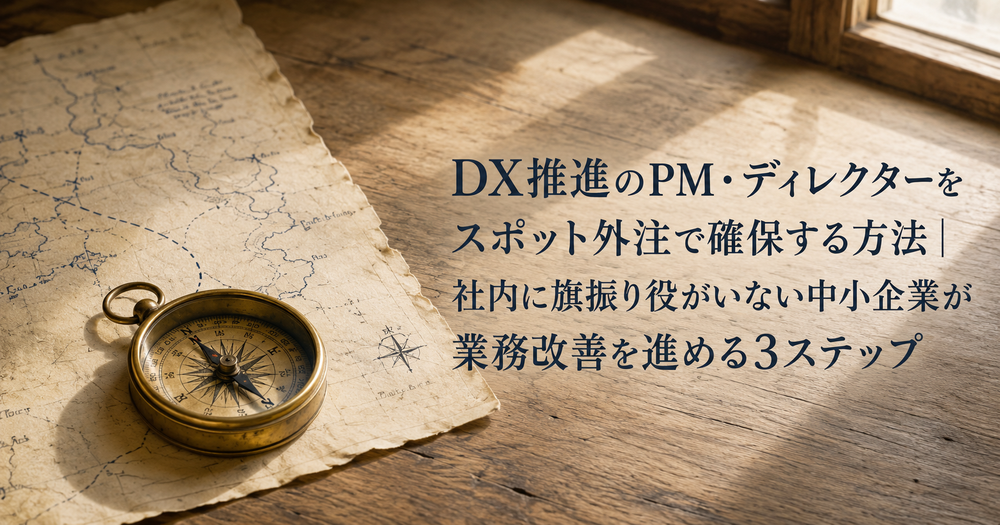
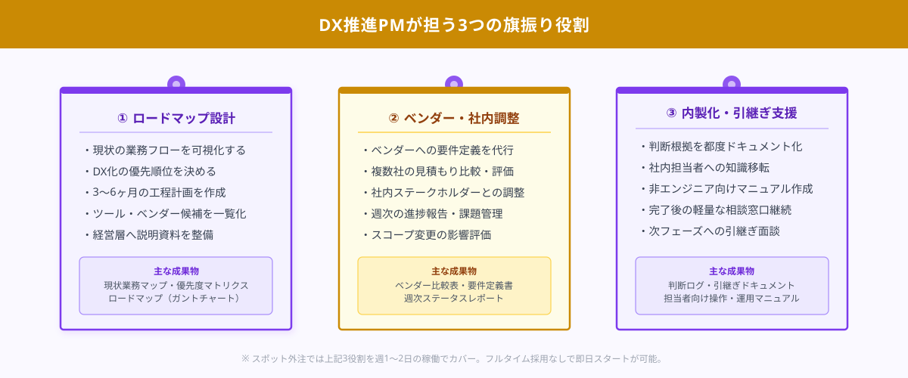
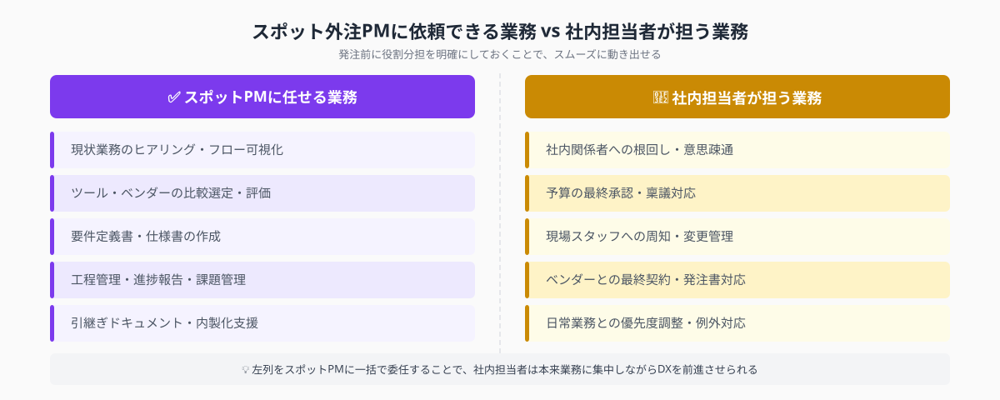

DX推進のPM・ディレクターをスポット外注で確保する方法｜社内に旗振り役がいない中小企業が業務改善を進める3ステップ
DX推進の旗振り役を最短で確保する答えは「必要な役割スコープを言語化し、スポット外注でPMを週1〜2日から発注する」ことだ。月15〜40万円の費用で、ロードマップ設計からベンダー調整・内製化支援まで一気通貫で依頼できる。「ITに詳しい人はいるが全体を仕切れる人間がいない」「何度も業務改善を試みたが誰も動かない」という企業にとって、スポット外注のDX推進PMはプロジェクトを前に進める最も実用的な選択肢だ。本記事では中小企業がスポット外注でDX推進PMを確保し、業務改善を動かすための3ステップを解説する。
本記事は2026年8月時点の情報に基づいています。
まず相談だけでも大丈夫です。
ANKENではDX推進PM・業務改善ディレクターの経験を持つスポット人材をご紹介できます。週1日からの発注が可能です。相談・見積もりは無料。しつこい営業は一切ありません。
無料で相談する →DX推進の旗振り役がいない中小企業に起きていること

中小企業でDXが進まない最大の理由は「ツールがない」でも「予算がない」でもなく、「全体を仕切れる人間がいない」ことだ。kintoneやSalesforceを導入しても現場に定着しない、業務フローの見直しを始めても途中で止まる、ベンダーから提案を受けても何を判断基準に選べばよいかわからない——こうした状況の根本には、プロジェクト全体の意思決定と調整を担う「PM（プロジェクトマネージャー）」不在がある。
大企業であれば情報システム部門のマネージャーやDX推進室のリーダーが担う役割だが、社員30〜100名規模の中小企業にこのポジションを専任で置くのは費用面でも人材採用の難易度からも現実的ではない。それでも「誰かが旗を振らないとプロジェクトは動かない」という事実は変わらない。
DX推進PMとは：業務改善・デジタル化プロジェクトの全体設計と進行管理を担う役割。具体的には「①現状の業務課題の整理とロードマップ設計」「②外部ベンダー・スポットエンジニアとの要件調整」「③プロジェクト進捗の管理と社内への報告」の3機能を担う。情報システム部門の担当者がいなくても、外部PMが社内のキーパーソンと連携することで機能させられる。
スポット外注でDX推進PMを確保する利点は「フルタイム採用コスト（年間600〜1,000万円超）の1/10以下で即戦力を動かせる」点だ。週1〜2日の稼働で3〜6ヶ月のプロジェクトを推進し、完了後は契約を終了するか、保守的な関与だけを継続するかを柔軟に選択できる。採用リスクなしに「プロのPM目線」をプロジェクトに取り込める手段として、近年急速に活用が広がっている。
STEP 1｜PMに必要な役割スコープを言語化する
スポット外注でPMを確保するうえで最初につまずくポイントが「何を頼めばよいかわからない」という発注側の曖昧さだ。この段階を整理するために、以下の3点をA4用紙1枚に書き出すことから始める。これ自体もスポット外注で「半日の壁打ち依頼」として解決できる。
① DX化したい業務と「今困っていること」を3点書く
「受注管理をExcelから脱却したい」「在庫のダブル発注が月に数件起きている」「現場からの報告が口頭のみで記録が残らない」——この粒度で十分だ。技術的な解決策を考える必要はなく、「困っていること」を言葉にするだけでよい。スポットPMはこの情報をもとに、具体的な改善案とロードマップを作成してくれる。
② PMに任せる権限とスコープを明確にする
PMへの発注でよく起きるトラブルが「PMが判断したくても社内の誰かの承認が必要で前に進まない」という状況だ。発注前に「ベンダー選定の一次評価はPMに任せる」「3社以内の見積もりを取る権限はPMが持つ」など、スポットPMが自律して動ける範囲を決めておく。予算執行の最終判断は社内に残してよい。
③ 期間と週あたりの稼働頻度を決める
DX推進PMのスポット外注では「3ヶ月・週2日」「6ヶ月・週1日」というパターンが多い。ロードマップ設計だけなら1〜2週間の単発依頼でも完結する。費用感を事前につかむためにも、まず期間と稼働日数の目安を決めてから発注条件を確定する。ANKENでは希望稼働日数を入力するだけで費用の概算を出せる相談窓口を設けている。
STEP 1の成果物は「①DX化したい業務リスト（3〜5点）」「②PMの権限スコープ定義」「③期間・稼働頻度の目安」の3点だ。この3点があれば、次のステップでスポットPMに具体的な発注ができる。
STEP 2｜スポットPMをANKENで探して依頼する

STEP 1で発注条件を整理したら、実際にスポットPMを探す段階に移る。ANKENでは「業務改善PM」「DX推進支援」「ITプロジェクトディレクター」の経験を持つフリーランス人材を週1日単位から発注できる。以下の手順で進める。
① ANKENで条件を入力して候補者を絞り込む
業種（製造・小売・サービスなど）・DX化したい業務領域・週あたりの稼働日数・予算感を入力すると、条件にマッチしたスポット人材の候補が提示される。特に「製造業の業務改善経験がある」「kintone・Notionの導入実績がある」など、業種や使用ツールが一致する候補者を優先すると、現場に即した提案が期待しやすい。
② 面談で「依頼した課題の整理力」を確かめる
PMの実力を見極めるうえで最も効果的な面談の問いかけは「当社の状況（STEP 1の3点）を聞いて、最初の1ヶ月でどう進めますか？」だ。優秀なスポットPMは「まず○○の業務フローを可視化して、□□の優先度を決める」という具体的な手順で回答する。抽象的な答えしか返ってこない場合は別の候補者を選ぶほうがよい。
③ トライアル発注（2〜4週間）から始める
初回はロードマップ作成だけ、または業務フロー可視化だけを「2週間・週2日」という形でトライアル発注するのが最もリスクの低いスタート方法だ。トライアル期間の成果物（ロードマップ文書・業務フロー図）の品質と、社内とのコミュニケーションの取り方を見て継続判断する。ANKENでは継続・終了どちらでも追加費用なく対応できる。
④ 本発注では週次の報告ルールを決める
スポットPMが稼働し始めたら「週次の進捗報告」ルールを最初に決める。報告形式は「Googleスライド1枚」「Notionのステータスページ」など、社内で共有しやすい形式で統一する。報告の頻度と形式を決めておくことで、PM稼働中に「何をしているかわからない」という状況を防げる。
STEP 3｜内製化に向けた知識・判断基準を移転する
スポットPMの最大の価値は「プロジェクトを動かすこと」だが、契約終了後に社内で継続できなければ再び同じ状況に戻ってしまう。STEP 3では内製化を前提とした「知識・判断基準の移転」を発注段階から設計する。
① 発注仕様に「判断根拠ドキュメント」を必須成果物として明記する
スポットPMが行うすべての重要な判断——「なぜこのベンダーを選んだか」「なぜこの業務から優先してDX化するか」「なぜこのツールがこの業種に合うか」——を、その都度1〜2段落で言語化したドキュメントを残してもらうよう発注仕様に明記する。この「判断ログ」の蓄積が、社内担当者が次のプロジェクトで自走できる基盤になる。
② 引継ぎ対象の社内担当者をPM稼働中から巻き込む
スポットPMが単独でプロジェクトを進めてしまうと、契約終了後に「PMしか知らない情報」が大量に残る。これを防ぐために、PM稼働の第2週目から「社内の引継ぎ担当者」を1名決め、全ての重要なやり取り（ベンダーとのメール・打ち合わせ議事録）をその担当者とも共有するよう契約条件に入れる。
③ PM終了後の「軽量な継続関与」を最初から設計する
完全内製化が難しい場合は、月1〜2日の「相談対応」だけを継続するプランも有効だ。スポットPMに「月次の状況確認と相談対応」を小口で依頼し続けることで、内製化を段階的に進めながらプロジェクト品質を維持できる。ANKENではこうした継続的な小口スポット依頼にも対応している。
活用事例：DX推進PM スポット外注の3事例
事例①：小売業（社員35名）でkintone導入PMをスポット外注し3ヶ月で現場定着
生活雑貨の小売業A社では、受発注・在庫管理・スタッフのシフト連絡がすべてExcelとLINEで行われており、情報が属人化していた。ITに詳しい従業員がkintoneの導入を提案したものの、「どのアプリを作るか」「既存業務をどう変えるか」という設計段階で止まっていた。ANKENでkintone導入実績のあるスポットPMを週2日・3ヶ月で発注。現状業務の可視化から要件定義・kintoneアプリ設計・スタッフ向け操作研修まで一気通貫で進め、3ヶ月後には現場スタッフが自律的にkintoneを更新できる状態に到達した。
事例②：製造業（社員65名）でバックオフィスAI化のロードマップ策定をスポット依頼
金属部品の加工業B社では、見積もり作成・請求書処理・勤怠集計をそれぞれ異なるシステムとExcelで管理していた。社長が「AIで効率化したい」とは考えていたが「どこから手をつけるか」「どんなツールを選べばよいか」が判断できず、複数のSaaSベンダーから提案を受けるたびに混乱が深まっていた。ANKENで業務改善PMを2週間・単発で発注し、現状業務フローの可視化と優先課題の特定、ツール選定基準の策定だけを依頼した。成果物として提出されたロードマップを軸に、その後の発注先・導入順序の社内決定がスムーズに進んだ。
事例③：ITサービス企業（社員40名）で部門横断のDX推進PMを週2日で確保
WebサービスのC社では、営業・開発・カスタマーサポートがそれぞれ異なるSaaSを使っており、データの連携が取れていないことが慢性的な課題だった。採用でプロパーのPMを確保しようとしたが、中堅PMの採用は平均5〜6ヶ月かかり即戦力に乏しいことから断念。ANKENで複数SaaS間の連携設計経験があるスポットPMを週2日・6ヶ月で確保した。ツール統合の優先順位付け・Zapier/Make.comを使った自動化設計・社内への展開研修まで一人でこなし、プロジェクト終了後も月1日の相談対応を継続中だ。
よくある質問
- Q. スポットPMの費用はどのくらいですか？
- A. 週1〜2日のスポット外注で月15〜40万円が目安です。プロジェクト規模・PMの経験年数・稼働日数によって幅があります。初期の要件定義だけを単日発注（3〜8万円）してから継続依頼に移行するケースも多くあります。
- Q. 社内に技術者がいなくても依頼できますか？
- A. はい、依頼者が非エンジニアでも問題ありません。スポットPMは「業務課題を整理して技術的な解決策に落とし込む」役割なので、発注側は「何に困っているか」を言葉にできれば十分です。ANKENでは初回のヒアリングから支援しています。
- Q. PM契約が終わったあとに社内で引き継げるか不安です。どうすればよいですか？
- A. 最初の発注仕様に「内製化できる引継ぎドキュメントの作成」を必須成果物として明記することが最も効果的です。ドキュメントが整備されていれば、その後の軽微な相談だけを月1〜2日のスポット依頼として継続することも可能です。
まとめ
DX推進PMをスポット外注で確保し、業務改善を動かすための3ステップをまとめる。
STEP 1：DX化したい業務・PMの権限スコープ・稼働頻度を言語化する。「何を頼むか」を3〜5点で書き出すだけで発注が可能になる。言語化自体をスポット外注（半日の壁打ち）に頼むことも現実的だ。
STEP 2：ANKENで業務改善PM経験者を探し、まずはトライアル発注（2〜4週間）で相性を確認してから本発注に移る。週次報告ルールを初日に決めることで進捗の透明性を保つ。
STEP 3：PM稼働中から「判断根拠ドキュメント」の作成と社内担当者の巻き込みを義務付け、内製化できる状態を目指す。完全移管が難しい場合は月1〜2日の継続関与も可能だ。
「まず要件をまとめる段階から伴走してほしい」「費用感だけ確認したい」という段階でも相談を受け付けている。ANKENでは初回相談・見積もりを無料で対応している。
DX推進のPM・ディレクターをスポット外注で相談する（無料）
業務改善PM・DX推進支援の経験を持つスポット人材をご紹介します。週1日からの発注が可能で、まず要件整理だけを単発依頼することもできます。初回相談・見積もりは完全無料です。
無料で相談・見積もりを依頼する →